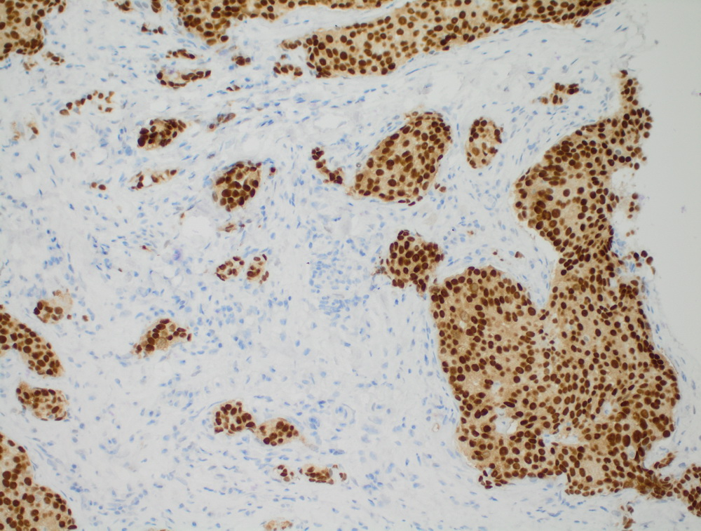
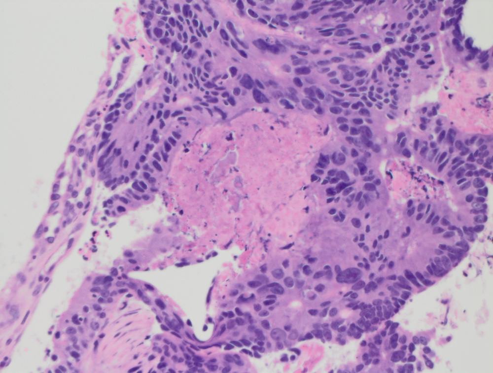
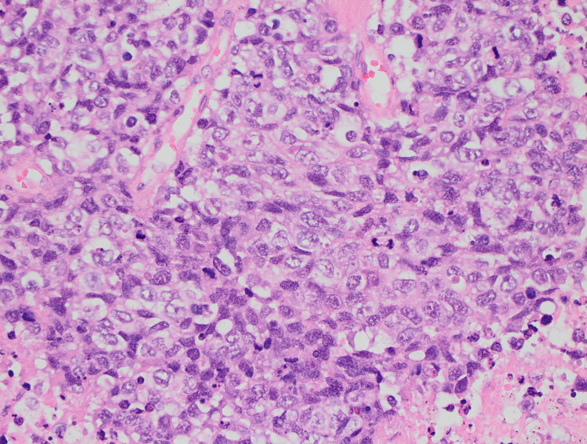
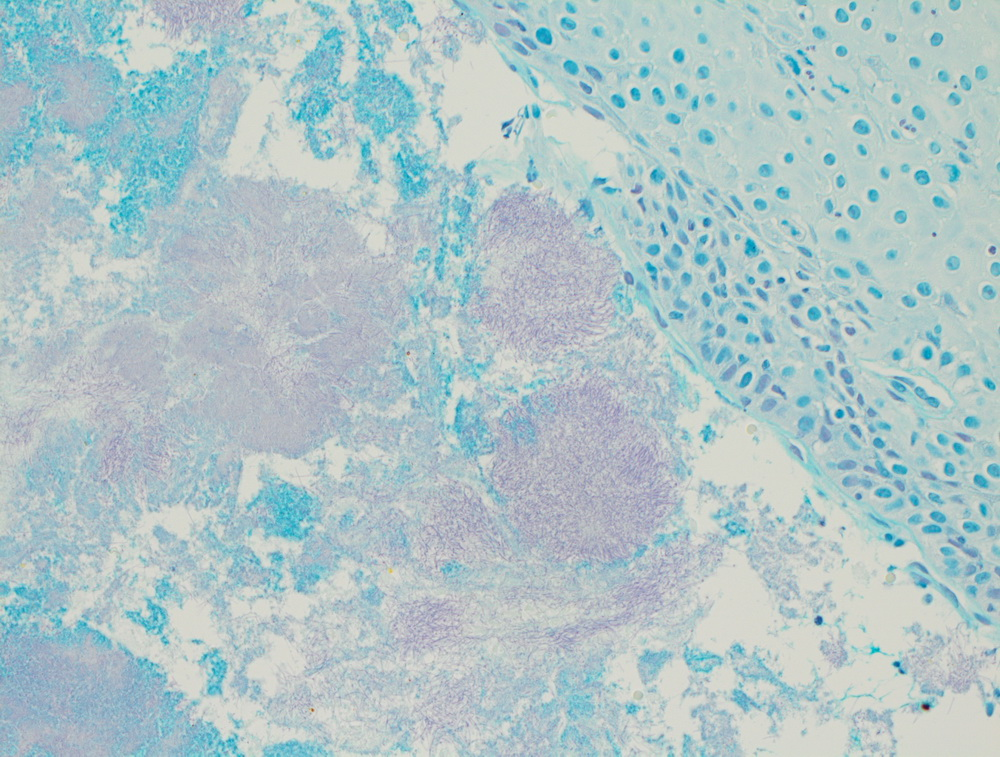
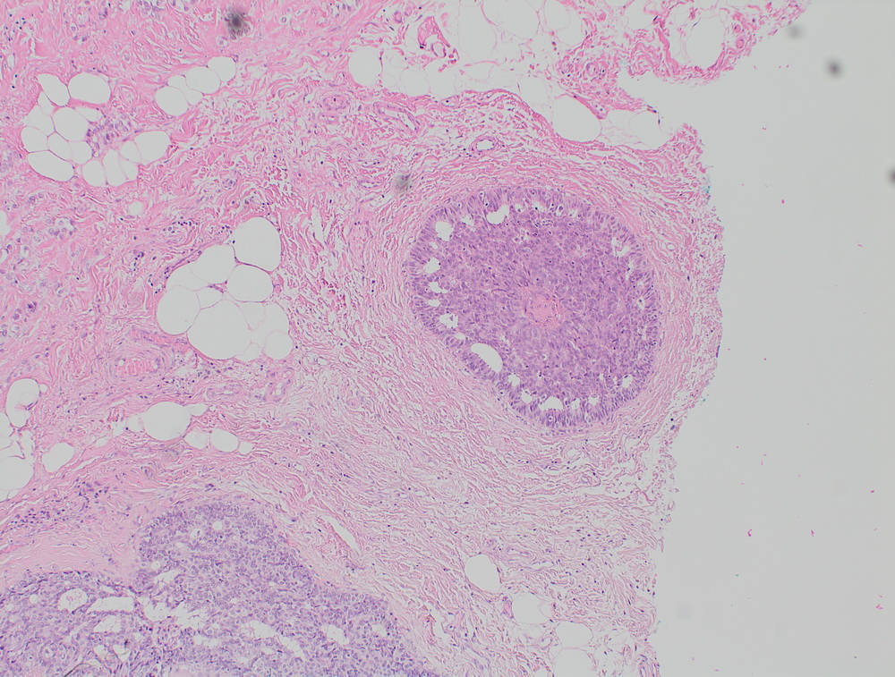

Гистологический метод диагностики наиболее широко используется в онкологии. Это самый верный способ отличить злокачественные клетки от доброкачественных. Назначение химиотерапии, лучевой терапии, цитостатиков различного ряда недопустимо без гистологического исследования, иначе велика вероятность ложного диагноза и причинения значительного вреда здоровью и жизни пациента. Именно гистология позволяет надежно застраховаться от такого рода ошибок.
Постановка диагноза «рак» также недопустима без гистологической диагностики. Этой области медицинской науки отведена роль «третейского судьи». Процесс начинается с взятия биологического материала. При этом врачи руководствуются тем, что биопсия с гистологическим исследованием не принесет вреда пациенту в отличие от неправильно поставленного диагноза. Поэтому биопсию назначают при лишь подозрениях на рак, но никак не при постановке диагноза.
Сначала опухоль прорастает в соседние ткани, следующим этапом будет распространение в близлежащие (регионарные) лимфатические узлы и рост отдаленных метастазов.
Злокачественное новообразование эпителиального происхождения, располагающееся в сигмовидном отделе толстого кишечника. На начальных стадиях течет бессимптомно. Затем возникают боли и дискомфорт в животе, метеоризм, чувство неполного опорожнения кишечника.
Новообразования, происходящие из верхнего отдела первичной эмбриональной кишки, дающего начало легким, бронхам, пищеводу, желудку и верхней части двенадцатиперстной кишки
Наиболее часто рак развивается из эпителия слизистой пищевода (карцинома), но встречаются и другие формы заболевания. Болезнь чаще диагностируется у мужчин, средний возраст больного — 50-60 лет.
это опухоль, при гистологическом анализе которой, не представляется возможным определить ее клеточную принадлежность. Диагноз «неспецифический рак»ставится на основании гистохимического анализа.
